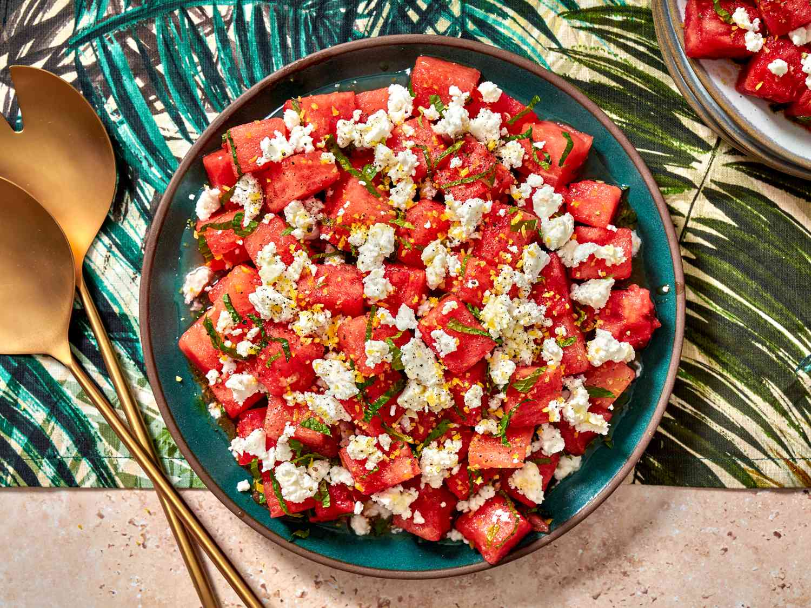

Watermelon Feta Salad

Description
A refreshing summer salad combining sweet watermelon with salty feta cheese, fresh mint, and a light drizzle of balsamic glaze. Perfect as a light side dish or a cooling snack on a hot day.
Ingredients
- 4 cups watermelon, cubed
- 150g feta cheese, crumbled
- 1/4 cup fresh mint leaves, torn
- 2 tbsp balsamic glaze
- 1 tbsp olive oil
- Pinch of black pepper
Steps
- Cube the watermelon and arrange on a serving plate.
- Crumble the feta cheese evenly over the watermelon.
- Scatter torn mint leaves on top.
- Drizzle with olive oil and balsamic glaze.
- Finish with a pinch of black pepper and serve immediately.
Back to Odin Recipes